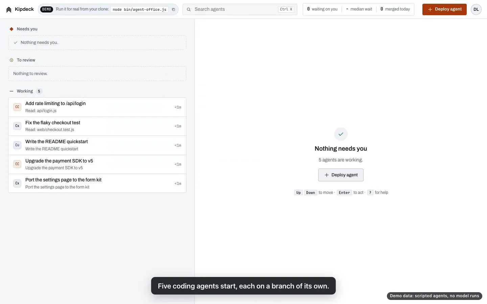
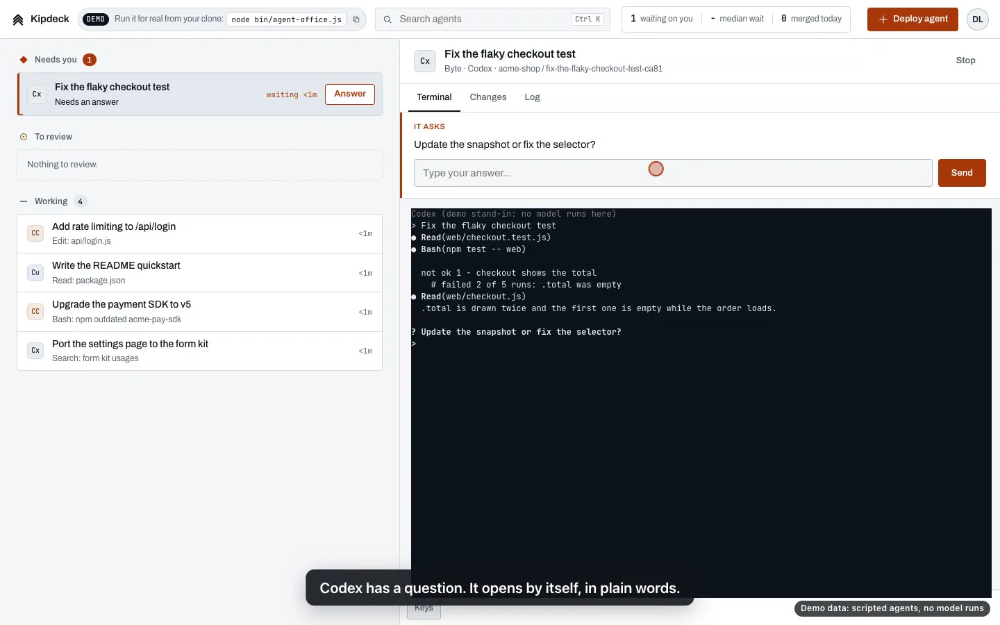
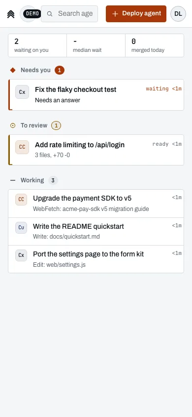
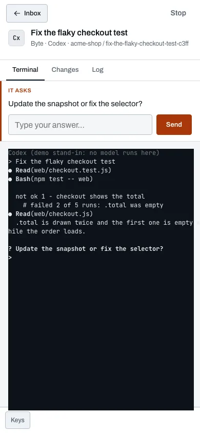
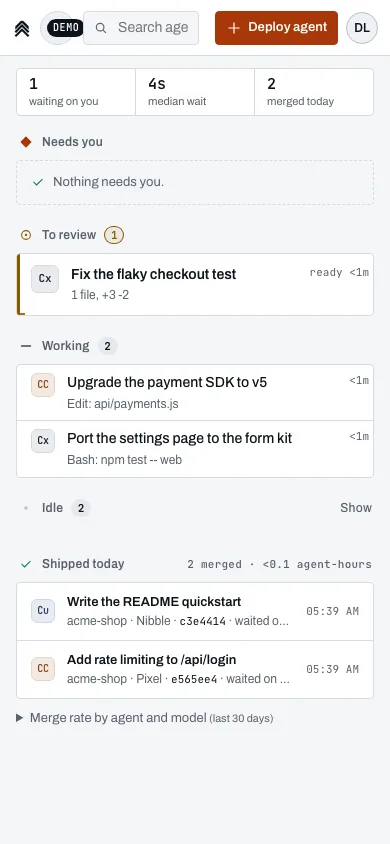

Your agents are waiting on you.
One inbox for every coding agent you run.
Pre-seed USD 100k SAFE, USD 1M post Vilnius
◆ Needs you 3 Working 5 Illustration, ranked by wait
$
Žygimantas Bagdzevičius/ Lukas Kveraga/ Ernestas Rimkevičius
Agent CLIs: src/shared/providers.ts
Engineers now run several coding agents at once: 70% of 906 surveyed engineers use two to four AI coding tools. The bottleneck is not the agents. It is how long they sit waiting on you. We are {{name}}: one inbox for every coding agent you run. Three engineers, Vilnius, raising USD 100k pre-seed.
The problem
An agent that asks a question at 10:02 and is answered at 10:25 did nothing for 23 minutes.
Illustration of one wait. No tool measures this across vendors today.
High-AI teams vs their own baseline
Faros AI, 10,000+ devs, 1,255 teams
0 +25% +50% +75%
PRs merged
PR review time
Tasks completed
+98%
+91%
+21%
OUR READING: THE GAP IS REVIEW AND WAIT
The natural bottleneck on all of this is how fast I can review the results.
Simon Willison, Oct 2025
More evidence (METR, Stack Overflow, DORA, Atlassian) is in the appendix.
AI made code cheap. The human in the loop is now the bottleneck, and no tool measures it across vendors. Faros measured 10,000 developers: high-AI teams merge 98% more PRs, review time goes up 91%, and tasks completed only 21%. Our reading of that gap: review and work waiting on a person. The 10:02 example is an illustration, not a measurement.
It gets worse with every tool
70 %
of 906 surveyed engineers use 2-4 AI coding tools . 15% use 5 or more (Pragmatic Engineer, 2026).
Four tools, four queues. Nobody sees the whole queue.
Illustration: four agent tools, four separate queues
Claude Code's own docs now recommend running several sessions in parallel, each in its own git worktree.
Anthropic added weekly limits because some users ran Claude Code "24/7".
Cursor promised to "refund any unexpected charges" after its June 2025 pricing change.
Teams run several agent vendors in parallel. 70% of 906 surveyed engineers use two to four AI coding tools. Each vendor's dashboard only sees its own agents, so the question that waited longest sits in the window nobody looked at.
Why now
AI coding revenue went vertical.
Parallel sessions are now in the vendors' own docs, and most engineers mix 2-4 tools. On a team, nobody sees all the agents, so the wait grows with every one.
4% of public GitHub commits authored by Claude Code, an estimate (analysis cited by Anthropic, Feb 2026)
2M+ weekly Codex users, 5x since the start of 2026 (Reuters, Mar 2026)
Annualised run-rate revenue, USD billions, one scale
latest figure per vendor, Feb-Sep 2026
0 1 2 3 4 5 6
0.5
2.5
5x
Claude Code Sep 2025
Claude Code Feb 2026
Claude Code 2.5
Cursor ~2.0
Cognition 1.0+
USD 5.5B+ a year
Three vendors, Feb-Sep 2026
different dates, summed
Capital is moving in:two agent-workbench rounds in four months
Mar 2026 Conductor USD 22M Series A (USD 24M raised in total), runs agents inside its app
Jul 2026 Superset USD 11.5M seed led by USV, an agentic IDE
Claude Code went from over USD 500M run-rate in September 2025 to over USD 2.5B in February 2026. Add the latest reported figures for Cursor and Cognition, from different months of 2026, and it sums to more than USD 5.5B a year. None of it buys a vendor-neutral way to manage them. Capital is already moving in: Conductor's USD 22M Series A in March and Superset's USD 11.5M seed in July, both for workbenches that run agents inside their own app.
The product
Every agent CLI you run in one ranked list. Oldest wait on top.
01 Deploy One sheet starts an agent, each on its own branch.
02 Pinged Claude Code, Codex, Cursor, plus 5 CLIs in beta and custom ones.
03 Act The question in plain words, one reply box. Review is the diff beside the list.
04 Ship Merge through GitHub or locally. Every merge is a signed record.
localhost · {{name}}


signed: agent / model / reviewer / wait



Real screens from the build, demo mode (scripted agents, no model runs) docs/inbox.md "The loop" src/shared/attention.ts, tests/inbox.test.ts
Four moves. Deploy an agent. Get pinged when it needs you, ranked by how long it has waited. Act: the question in plain words, one box, or review the diff beside the list. Ship: merge through GitHub or locally, and every merge becomes a signed record. Same inbox on the phone.
60-second demo
Asked to merged, one pane.
01 Deploy Five branches, five agents 02 Pinged Codex jumps to the top 03 Act Answered in one box 04 Ship Merged, wait signed
npx {{cmd}} --demo Demo data: scripted agents, no model runs
Recording: about 60 s, silent, the real build in demo mode with scripted stand-in agents tests/demo.test.ts, tests/demo-e2e.test.ts
Let it play. Five agents start. Codex is blocked, it jumps to the top and its question opens in plain words. One box to answer. Claude Code finished: three files, tests pass, the real diff beside the list. Merge, without GitHub if you want. Same inbox on the phone. Then the number we sell on: human wait time per agent and model. Be upfront: the agents here are scripted stand-ins, so it runs the same every time. A recording with live Claude Code and Codex sessions is next.
How it works
Self-hosted, vendor-neutral, on your own machine.
{{name}} itself is self-hosted: no {{name}} cloud, no account. Your agents still talk to their own model APIs.
Agent CLIs
Claude Code Codex Cursor
OpenCode (beta) Pi (beta) Grok (beta) Muse (beta) DeepSeek Harness (beta)
+ custom
each on its own branch
wait data
attach joins a running Claude Code, Codex question reader parses the ask from any CLI ranking oldest wait first same on every screen inbox answer, review desktop and phone merge GitHub or local; refuses unsafe ones signed log Ed25519, appended to shipped.jsonl Pulse and Numbers median wait, merge rate per agent and per model ? update the snapshot or fix the selector
sig 3f9a..c1e0 (illustrative)
Agent CLIs Claude Code, Codex, Cursor; OpenCode, Pi, Grok, Muse, DeepSeek Harness in beta; plus customattach takes over a running Claude Code or Codex sessionquestion reader parses the ask from any CLIranking oldest wait first, one order everywhereinbox answer and review, desktop and phonemerge GitHub or local; refuses unsafe mergessigned log Ed25519, appended to shipped.jsonlPulse and Numbers median wait, merge rate per agent and per model
npx {{cmd}}
No password on your own machine
No {{name}} cloud; agents use their own APIs
src/shared/question.ts src/server/localmerge.ts src/server/shiplog.ts src/shared/metrics.ts src/server/firstrun.ts src/shared/providers.ts (8 CLIs + custom)
One question travels the pipeline: parsed from whatever CLI asked it, ranked, answered in the inbox, merged locally or through GitHub, and signed into the log. The log feeds Pulse and Numbers: median wait, merge rate per agent and per model. {{name}} itself runs on the team's machine; the agents still call their own model APIs.
Proof of execution
A working product, measured. No users yet.
Fresh start to first merged change
0.0 s
4 clicks · measured 2026-10-07, headless, stand-in agent, no model
3.4 s to the first agent at work, 1 click
1,281 test cases on the product branch
19 security audit findings closed before launch
Next, before revenue: publish, launch, and sign 5 design-partner teams that run 5+ agents a day.
measure.json (2026-10-07) Test count: it/test calls in tests/, product branch at c8119c0, 2026-10-07 Audit: launch/report/comparison.md (2026-10-06)
We have no users yet, and we say so once. What we have is a working product, measured: 10.7 seconds and four clicks from a fresh start to the first merged change, 3.4 seconds to the first agent at work. 1,281 test cases. 19 security audit findings closed before launch. Today it installs from a local tarball; the npm publish is milestone one.
Market, bottom-up
11.3M developers use agents.
Professional developersSlashData, early 2025 36.5M
x 31% actively use AI agentsStack Overflow 2025 share; our estimate 11.3M
x USD 360 a seat a year = TAMour team-tier price; at Conductor's USD 720: 8.1B USD 4.1B
Daily agent users, 14.1% = SAMStack Overflow 2025; 5.1M x USD 360 USD 1.9B
Year-5 path, our assumption100k free installs x 2% become teams x 10 seats x USD 360 USD 7.2M ARR
The budget already exists: USD 5.5B+ a year already goes to AI coding tools (slide 4).
Bottom-up: 36.5 million professional developers; applying Stack Overflow's 31% agent-use share gives about 11.3 million, our estimate. At our own team price, USD 30 a seat a month, that is a USD 4.1 billion TAM; at Conductor's USD 60 it would be 8.1. Daily agent users give a USD 1.9 billion SAM. The year-5 path is an assumption we will test: 100k free installs, 2% turn into teams of ten, USD 7.2M ARR.
Competition
Conductor and Superset help one developer run more agents. We stop your team keeping them waiting.
LAUNCH AGENTS INSIDE OUR APP ATTACH WHEREVER THEY RUN →
SOLO TEAM →
Platform inboxes
GitHub Agent HQ, the Codex app, Antigravity and Claude Code each show the agents in their own harness. 70% of 906 surveyed engineers use 2-4 AI coding tools.
Workbenches: Conductor (USD 24M), Superset (USD 11.5M)
Agents are launched inside their app, with timers, team plans and multiplayer. They are ahead of us on product and distribution.
Why won't Conductor, Superset or GitHub add this?
They may add a team view, but it sees only the agents launched inside their own app. We attach to agents wherever they already run, any vendor, any machine, and route each wait to the teammate who owns it. Attach works today; team routing is M3, not built yet.
Two kinds of products sit next to us. Platform inboxes, GitHub Agent HQ, the Codex app, Antigravity, Claude Code, each see their own harness. Workbenches, Conductor with USD 24M raised and Superset with a USD 11.5M seed, run agents launched inside their app, now with timers and team plans; they are ahead of us on product and distribution. Agentbox and a DIY Slack hook are the free solo default. Paperclip is the nearest neighbour for teams. Why won't they add this? They may add a team view, but it only sees their own agents. We attach to agents wherever they run and route each wait to the teammate who owns it. Attach works today. Team routing is M3, not built yet.
Moat, as a plan
Distribution first. Then wait data no single vendor has.
01 Open-source installs Single-player is MIT-licensed and free; public release at M1.
02 Cross-vendor wait data Every merge already records agent, model, reviewer and wait. As teams adopt, that becomes data no single vendor can collect.
03 Team upgrade The second person who needs the queue turns a free install into a paid team.
Median wait on a person, by agent, week over week mock data
Wait
Self-hosted: the record sits on the team's machine, not in a {{name}} cloud. The code is not the moat; installs and the wait data are.
src/server/shiplog.ts src/shared/metrics.ts PRODUCT.md
We do not claim a moat today. The plan: open-source installs first, then the cross-vendor wait data that builds as teams adopt, then the team upgrade. The code is not the moat.
Business model
Free for one engineer. Teams pay.
Single player Free MIT Inbox, local merge, signed log, wait metrics The distribution: one npx command, public at M1 Team tier price is our assumption FREE USD 30 /seat/mo Shared queue, routing to the owner, team wait-time reports SSO, audit export. Not built yet: milestone M3
Go-to-market
01 Launch npm publish and Hacker News with the 60 s demo (M1).
02 5 design partners Founder-led, teams running 5+ agents a day; European and regulated first.
03 Bottom-up One engineer installs free; the team upgrades when a second person needs the queue.
04 Team tier Paid seats for design partners first, then self-serve.
No revenue yet. Paid design-partner pilots are possible (offer ready, none sold); that is design-partner revenue, not the business.
PRODUCT.md "Business model" USD 30: our assumption, same as the market slide
Free and open source for one engineer: that is the distribution. Teams pay for the shared queue, routing, SSO and audit, about USD 30 a seat a month, our assumption to test. Go-to-market: launch, five design partners, bottom-up upgrades, then the team tier. Pilots can bring early cash, but they are not the business.
The team
Engineers who have built and scaled products before.
400k MAU, exited
Ex-Amazon engineer. Founded and exited a Lithuanian business that scaled to 400k monthly active users. Built Motored's whole product before outside money.
Lukas Kveraga
Founding Engineer
Ex-Vinted
Lithuania's marketplace unicorn. Hands-on experience scaling a high-traffic two-sided marketplace.
Pipelines
Backend, importer, listings pipeline and ops tooling (at Motored).
Disclosure and commitment
Company: to be incorporated before close.
CEO/CTO commits with agents, 30 Sep-7 Oct
motored-lt.vercel.app/data-room (backgrounds and Motored roles)git log of the product branch: 533 commits, all by the CEO/CTO, almost all co-authored with Claude Zygimantas: ex-Amazon, founded and exited a business at 400k monthly active users, built a charity project that grew to 540k registered users, and built Motored's entire product before any outside money. Lukas: ex-Vinted, scaling a high-traffic marketplace. Ernestas: backend, importer and pipelines at Motored. Say the Motored overlap plainly: all three work there today. The commit chart is the CEO/CTO working with coding agents, which is the workflow we sell into, not a claim of team velocity.
The ask
USD 100 k
Post-money SAFE, USD 1M valuation cap: 10%.
Company to be incorporated before close. About USD 11k a month: 9 months of runway.
70k founder time, ~9 months
10k models, hosting, hosted demo
10k company, legal, trademark, IP
10k go-to-market, partner travel
9 months to 5 design partners and the first paying teams
M1 npm publish, public repo, hosted demo
M2 5 design partners running 5+ agents a day
M3 Paid team tier: shared queue, routing, SSO
M4 First paying teams; week-4 team retention measured
Nobody waiting.
What this round proves: teams pay for one queue across vendors.
Use of funds is a proposal Runway: USD 100k over ~9 months Name subject to a trademark search
USD 100k on a post-money SAFE at a USD 1M valuation cap, 10%. The company is incorporated before close. About USD 11k a month buys nine months. 70% buys founder time. Milestones: npm launch, five design partners, the paid team tier, first paying teams with retention measured. What it proves: teams pay for one cross-vendor queue, which is the case for a seed round. The queue is clear. Nobody waiting.
Appendix
Tool by tool, and more evidence on the problem.
What you need Vendor dashboard Task board GitHub PRs Terminals, tmux {{name}}
Every agent CLI in one list Its own If you file them Once a PR exists One pane at a time Ranked by wait Knows an agent is blocked on you Its own No No If you look Top of the list Answer in one box In its app No No Find the terminal Every CLI Review and merge before a PR No No No By hand Or open one Measures wait on a person No No No No Per agent, model Self-hosted Varies (local CLI or vendor cloud) Depends Their cloud Yes Yes, MIT (public at M1)
METR: experienced devs were 19% slower with AI while believing they were 20% faster.
Stack Overflow 2025: 66% frustrated by "almost right" output; 3.1% highly trust AI.
DORA 2025: AI adoption has a negative relationship with delivery stability.
Atlassian DevEx, 3,500 devs: 50% lose 10+ hours a week to friction; 63% say leaders do not get it.
Backup for questions: the tool-by-tool comparison and the wider evidence on review and friction.